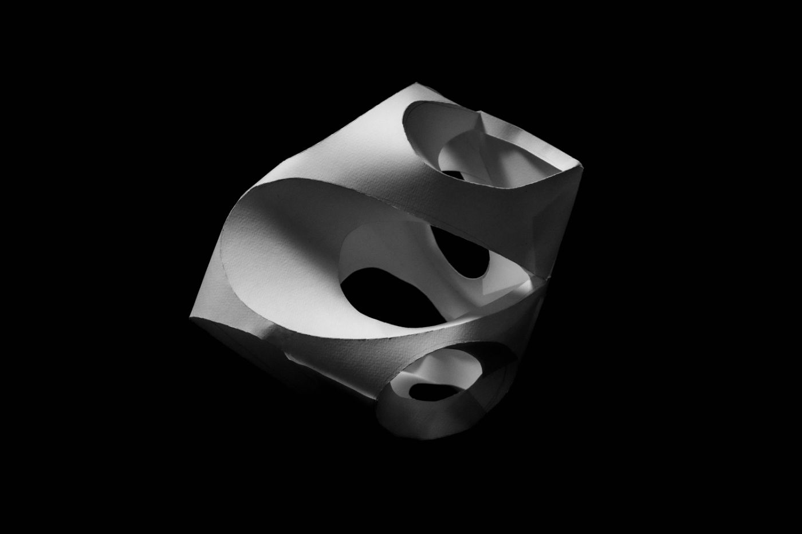
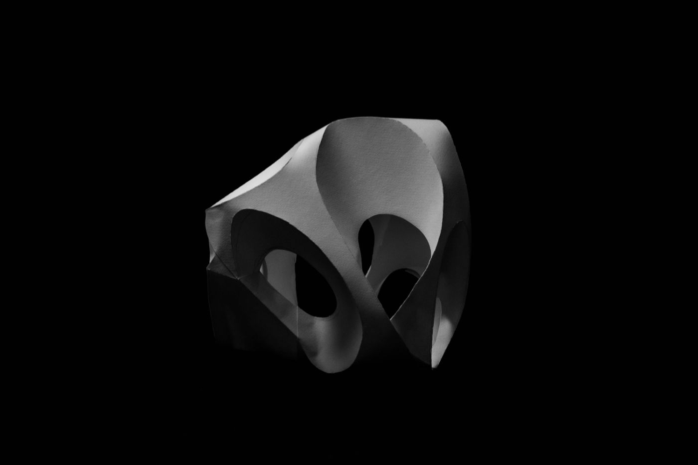
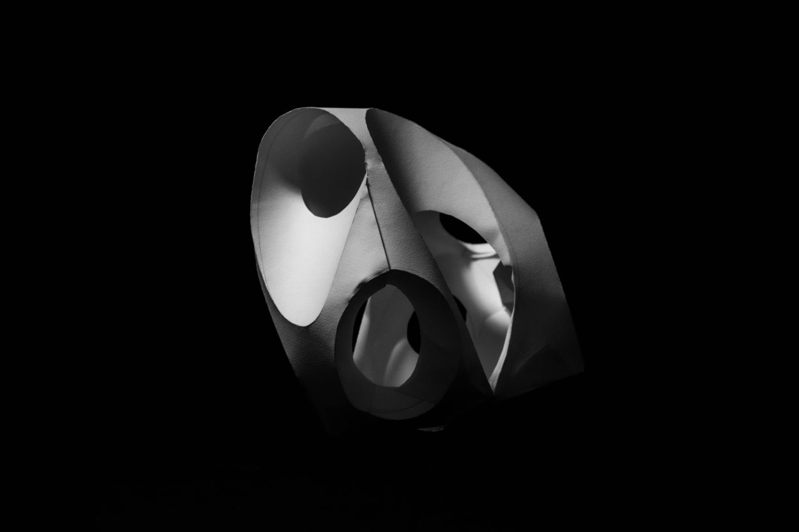
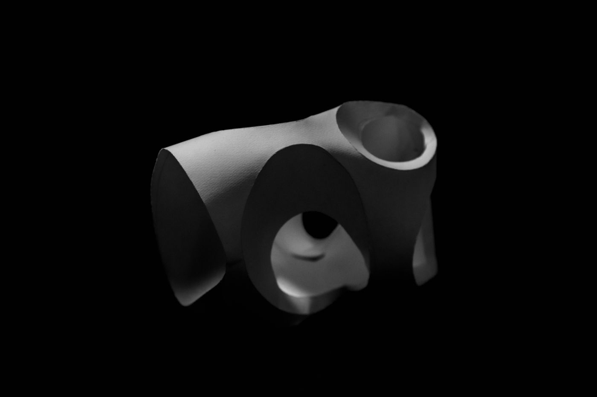
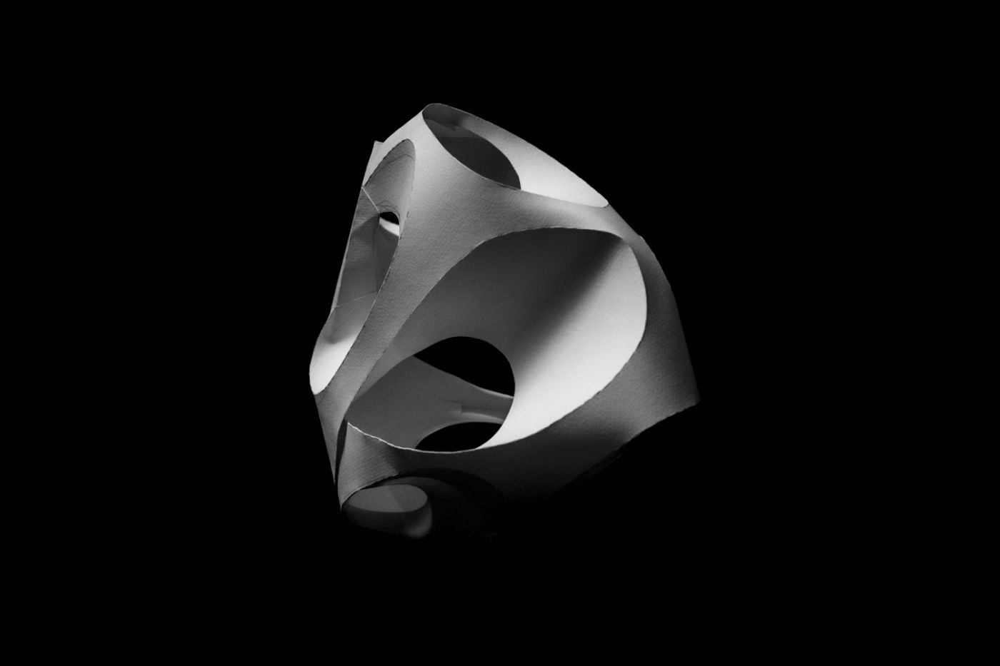
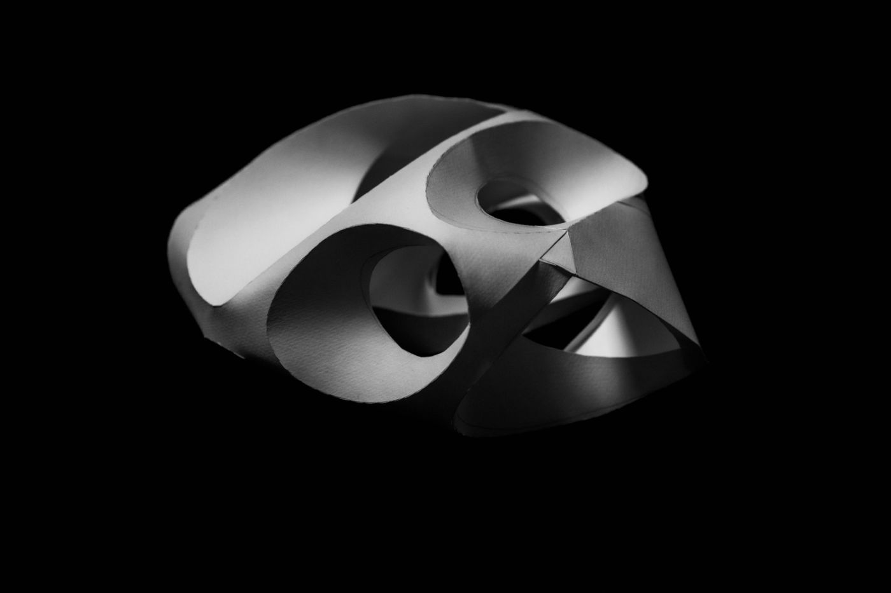
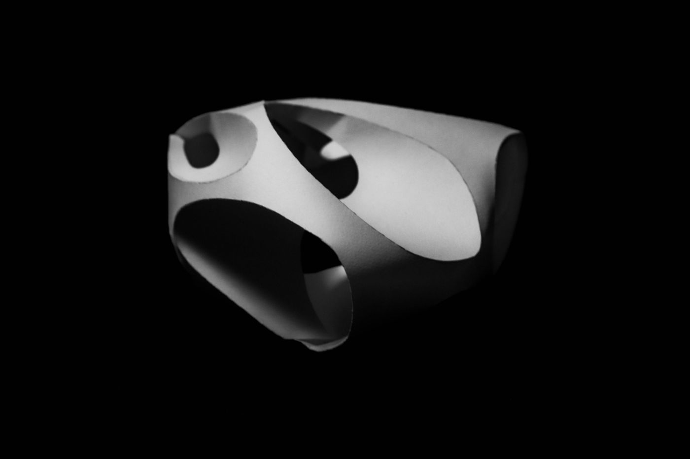
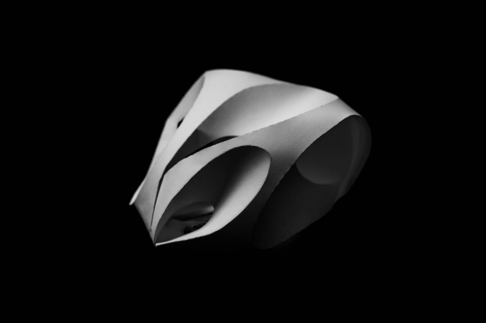

CURVED CREASE
Curved crease folding is a technique used in origami that involves folding along smooth, curved lines instead of straight lines. This technique allows for the creation of more intricate and organic shapes.
The presented sculpture, is a quick crafted paper model based on a single A4 sheet. Curved creases were achieved by manually cutting the paper.
The presented sculpture, is a quick crafted paper model based on a single A4 sheet. Curved creases were achieved by manually cutting the paper.
2020
Inspired by ZHA CODE
Inspired by ZHA CODE








